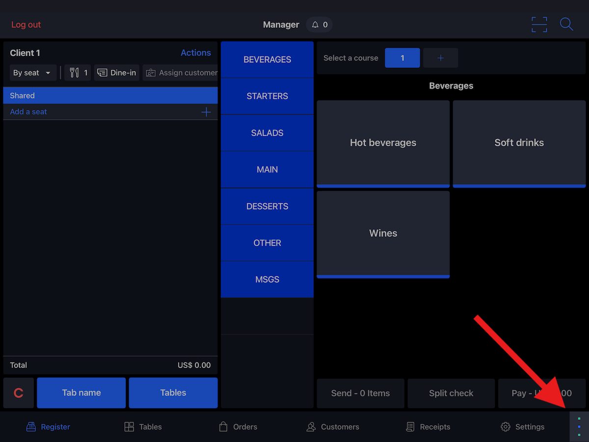
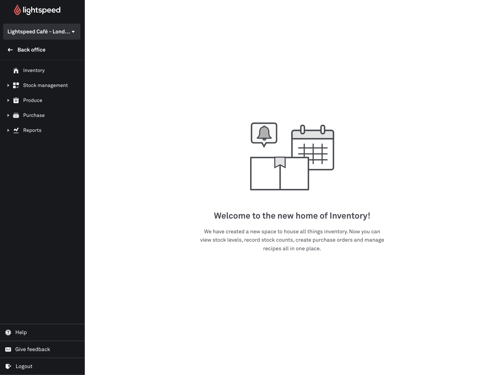
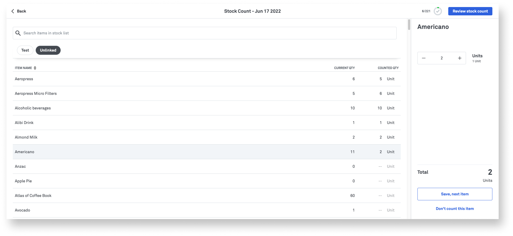
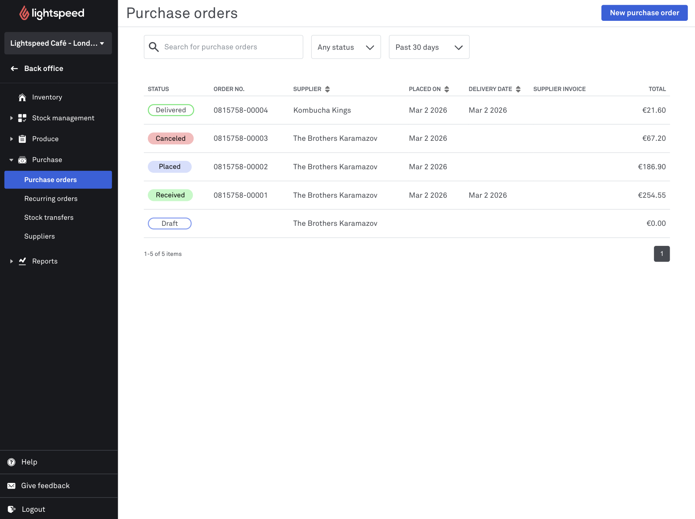
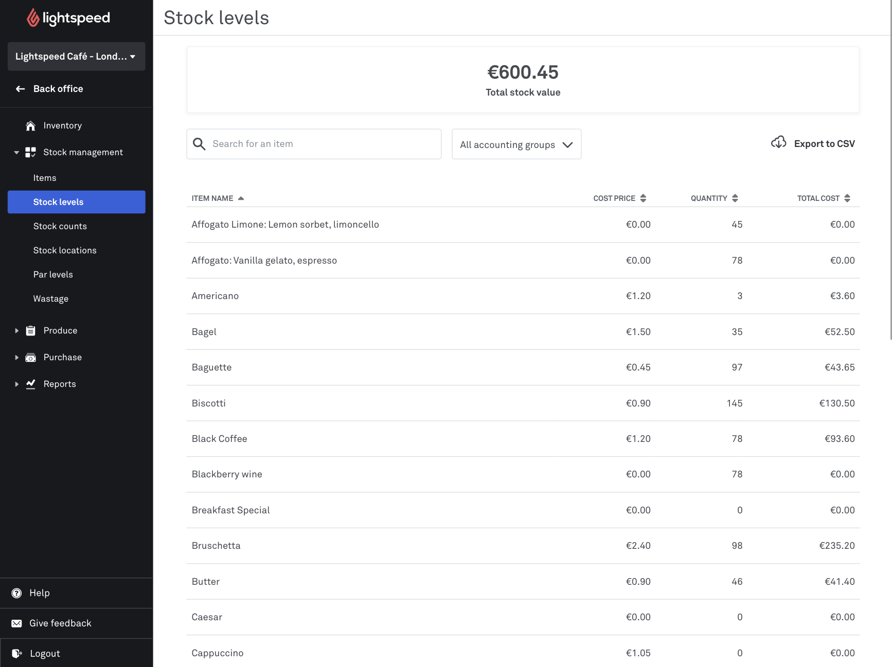
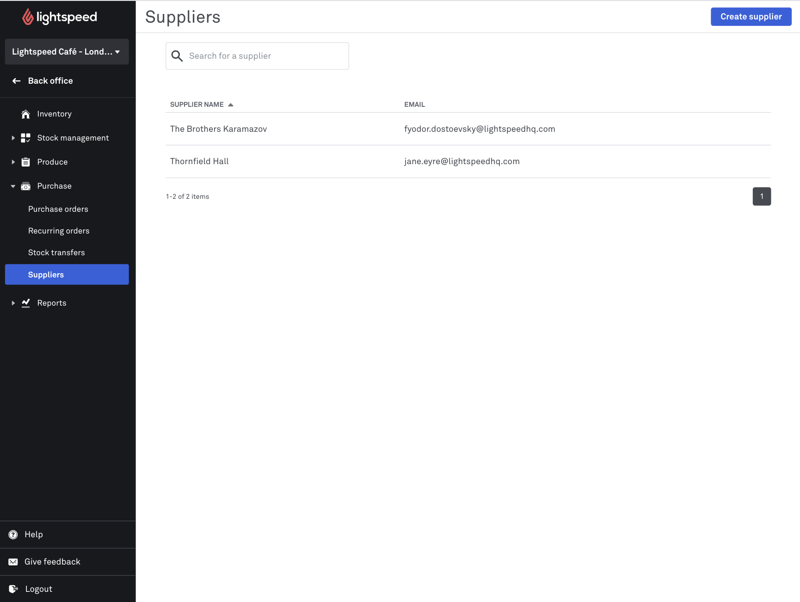
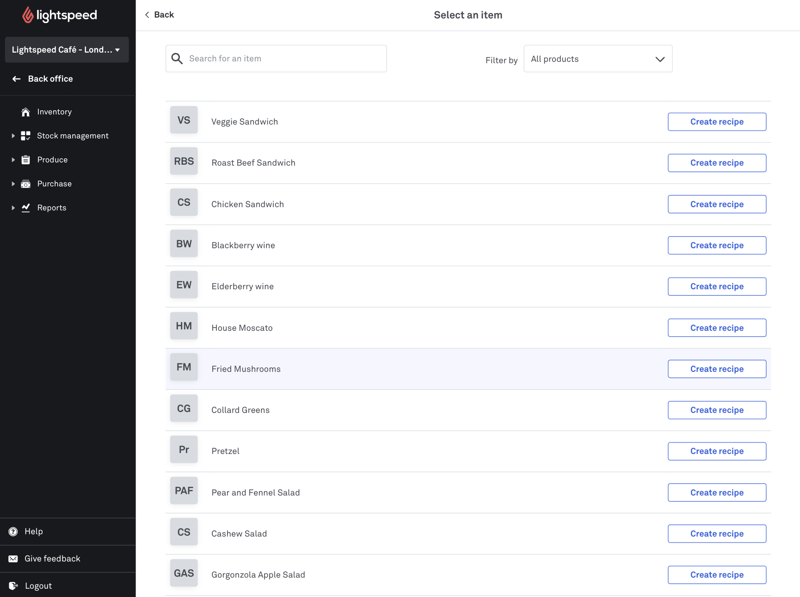
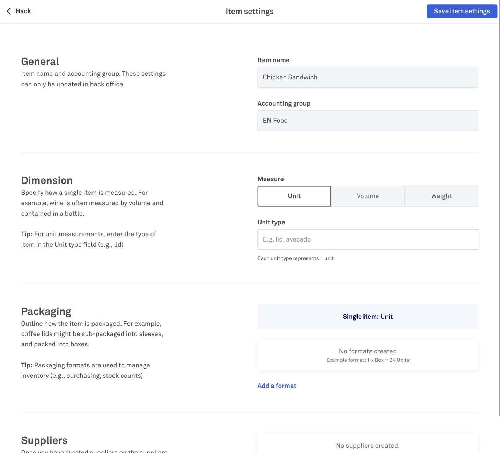

Umi research · 2026-09-18
Your instinct is correct. Nine competitors were checked, and no restaurant POS puts inventory management on the till. The till gets one action: mark this item out. The count happens on the floor with a phone or a tablet. The setup, the cost, and the vendor work live in the back office. Umi has this inverted, and the RBAC vocabulary is what holds the inversion in place.
Inventory is three jobs, not one. Each job has its own surface, its own device, and its own permission. The observed failure in this market is that "count" gets filed under "configure".
TILL · any employee
FLOOR · many hands
DESK · owner and manager
Lightspeed is the only vendor in the set that publishes its product screens in the open help centre. The two captures below are from the same product, on the same day. Documented fact


The same vendor, the same day, two products. The till has six destinations built for service. The back office has an inventory hub with five of its own. Lightspeed did not put inventory on the till and put it in the back office. It chose one place, and the place is the desk.
Same product, back office. Note the shape: dense tables, list-detail panes, desktop widths, and status as colour chips. This is an office surface, and it is built for a keyboard and a mouse. Documented fact

6/221, and the primary action is
Save, next item.





Nine products. The column that matters is the second one. Seven of the nine keep the record off the till. One of the two exceptions is a retail product, and the other is undocumented.
| Product | Where the record lives | Named screens | Device | Permission gate |
|---|---|---|---|---|
| Toast | Web + thin till Real inventory is xtraCHEF, a separate product | Update Stock, Food waste tracker, Bill Pay Vendors, Quick Edit on POS | Desktop web, till, phone | Inventory & Quantity |
| Square | Both Receiving and counts in the retail POS app; overview, orders, vendors in the Dashboard | Stock overview, Receive stock, Stock counts, Purchase orders | iPad, iPhone, desktop | item and inventory permissions |
| Lightspeed K | Back Office The whole Inventory module | Stock counts, Stock levels, Purchase orders, Suppliers, Recipes | Desktop web, multi-device count | Integrations and customers |
| Shopify | Admin POS reads it; Stocky adds store-side receiving | Purchase orders, Transfers, Stocktake | Desktop web, tablet POS, phone app | Manage inventory (excluding transfers) |
| Loyverse | Both Advanced Inventory is Back Office, and a paid tier | Inventory Count, Purchase Orders, Transfers, Valuation | Mobile app plus Back Office | Tier gate, not a role |
| TouchBistro | Separate product | Counts, recipes, waste, suggested ordering | Multi-manager count | UNVERIFIED |
| SpotOn | Back of House | Adjustment Reasons, Requisition Groups, Label Printing | UNVERIFIED | UNVERIFIED |
| Revel | Management Console The POS holds one availability action | Stocktake, Physical Inventory, Purchase Orders, Item Availability on POS | UNVERIFIED | UNVERIFIED |
| Clover | UNVERIFIED Item definition only, in the reachable sources | Item definition | Clover devices | UNVERIFIED |
Sources and per-product sections: inventory UI/UX surfaces.
Fifty-five distinct reviews and posts were read. The corpus names a place for the count every time, and the place is never the till. These four quotes carry the whole argument. Documented fact
"Our company is switching to a new inventory software that has the ability to enter inventory into an iPad as you count instead of writing it down then entering it into a computer… It still takes around 6 hours to count the entire building, and that won't change."
"I only moved to clover to be able to manage everything from my phone, and now I'm being told I have to do everything from my laptop, who carries their laptop around all day!"
"The app is an extension of an incredible online software. The app is almost marketman light which allows us at the restaurant to handle simple task like taking inventory, scanning and ordering. The software itself on the laptop does all the heavy lifting."
"Everything's pretty great except I want staff to have access to inventory but not all the reports."
"Always always always closes when finishing an inventory and you lose all info you just spent hours counting. The app is absolute garbage. Only use on computer as it won't crash."
"Don't use this app if you're in a rush… Unless you remember to save your counts every five minutes in the app, your best bet would be walking around with a computer and using the actual website."
Two vendors publish a partial save, and two reviews describe the loss of a hours-long count as the reason the product failed. Umi already has the durable machinery for this: the count is a command, and the stock ledger is append-only. The surface that must never lose work is the floor surface.
Vendors name the permission, and the name states the surface. Shopify has no inventory permission on the POS role at all. Toast allows exactly one inventory action on the till. Documented fact
| Vendor | Permission, exactly | What the vendor says it allows | Surface |
|---|---|---|---|
| Shopify | Manage inventory (excluding transfers) | "This permission allows users to create, track, import, and export inventory. Allows users to edit inventory quantities, SKUs, and barcodes." | Store (admin) |
| Shopify | Manage transfers / Manage shipments | "This permission allows users to create and update inventory transfers." | Store (admin) |
| Toast | Inventory & Quantity | "Gives access to quick edit mode on the Toast POS app where the employee can mark a menu item or modifier option as In Stock or Out of Stock, or adjust the quantity on hand." | POS, one action |
| Square | Standard / Enhanced / Full | "Permissions define what your team members can see or do within your Square Point of Sale, the Square Team app, Square Dashboard, and the Square Dashboard app." | Both, one model |
| MarginEdge | Shared Device Mode | "allows you to set up a phone or tablet that your team can use to view recipes, upload invoices, take inventory, and record waste — all without accessing sensitive financial information." | Floor device, PIN not account |
| Lightspeed | Show product costs | Separate from stock. Cost is its own permission. | Back office |
The sources name the failure directly. NIST SP 800-162 describes a static role model under a changing rule set as "numerous roles that are ad hoc and limited in membership, leading to what is often termed 'role explosion'", and adds that "failure to remove or revoke access over time leads to users accumulating privileges." The OWASP Authorization Cheat Sheet goes further, with a section heading that is itself the rule: "Prefer Attribute and Relationship Based Access Control over RBAC." Documented fact
One Square permission set applies to the point of sale, the Team app, the Dashboard, and the Dashboard app. That is easy to explain. It is also the model that makes an owner read a permission list written for two very different surfaces at once.
This is the part that answers your second question. The dashboard does not merely "juggle" RBAC. The permission vocabulary is shaped for a till session, so the dashboard cannot gate a costing screen with an inventory key.
| Role | inventory.read |
inventory keys, total | Full count and approve | merchant.manage |
Can open till Inventory | Can author in Dashboard |
|---|---|---|---|---|---|---|
| owner | yes | 21 | yes | yes | yes | yes |
| manager | yes | 20 | yes | no | yes | no |
| supervisor | yes | 8 | no | no | yes | no |
| cashier | yes | 1 | no | no | yes | no |
| viewer | yes | 2 | no | no | yes | no |
Read from docs/migration/build-v3/35_pos_pilot_rbac.sql (the role grants) and
apps/umi-dashboard/src/lib/module-registry.js (the screen gates).
Documented fact
The manager role carries twenty inventory permissions: count create,
submit, reconcile, approve, adjust up and down, waste, damage, quarantine, restock,
production. It does not carry merchant.manage. The dashboard's Inventario
tab is gated on merchant.manage. So the person whose job inventory is has
the full toolkit on the device built for serving guests, and no authoring screen on the
device built for office work.
The till entry is showInventory => permissions.allows('inventory.read'),
and every seeded role carries inventory.read. A cashier opens the surface
and finds the read shell. Toast gives the equivalent employee one action and one
permission named for that action. Umi gives a whole screen and lets the permission
trimming happen inside it.
The comment on the inventory-costing module says it plainly: the screen
gates on merchant.manage,
"not by an inventory.* key", because
"an inventory.* key is carried only by POS operator sessions, which
would make the screen unreachable from the console."
That is the role explosion in miniature. The vocabulary ran out of room, and the
fallback was a broader permission than the task needs.
Nothing here needs a new product. The pieces exist. The change is which surface owns each one, and which permission names the door.
UmiPOS · any operator
inventory.availability.settablet or phone · many hands
inventory.count.enterinventory.count.reconcile, manager onlyDashboard · owner and manager
inventory.manage, held by owner and managerinventory.cost.read| Rule | Source |
|---|---|
| Keep the frequent action on the main surface. Do not put a workflow command in a settings page. | Microsoft Windows design guidelines |
| Put the rare, infrequently changed task on its own surface, because the user must suspend the main task to reach it. | Apple Human Interface Guidelines, Settings |
| Split the action, not the person: a non-manager may enter a count, and only a manager may open or close it. | MarginEdge role documentation |
| Set the default to deny, and require a written reason for each grant. | OWASP Authorization Cheat Sheet |
Inventory does not belong in the POS as a screen. It belongs in the POS as one small action, "this item is out". The count belongs on the floor device. The setup, the costing, and the vendor work belong in the dashboard. The permission model has to cross all three, because the same manager uses more than one of them.
These are the gaps. They are named rather than filled. UNVERIFIED
| Item | Why it is open |
|---|---|
| Clover inventory screens, device, and permission | The help centre is a custom application with redirecting article URLs |
| TouchBistro screen names and permission | Help centre returns HTTP 401 on every route |
| SpotOn and Revel screen contents | JavaScript shells, live and in the archive |
| Lightspeed L-Series inventory surface | Only the K-Series was verified |
| Square's per-level inventory label | The current support page names the levels, not the inventory toggle |
| G2 and Capterra content | IP-blocked from this workstation. The App Store and Google Play corpora were used instead |
| Official inventory screenshots for eight of the nine products | Each vendor keeps the back office behind a login. Lightspeed is the exception |